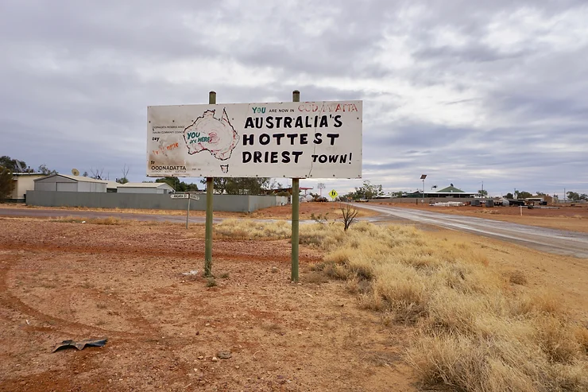
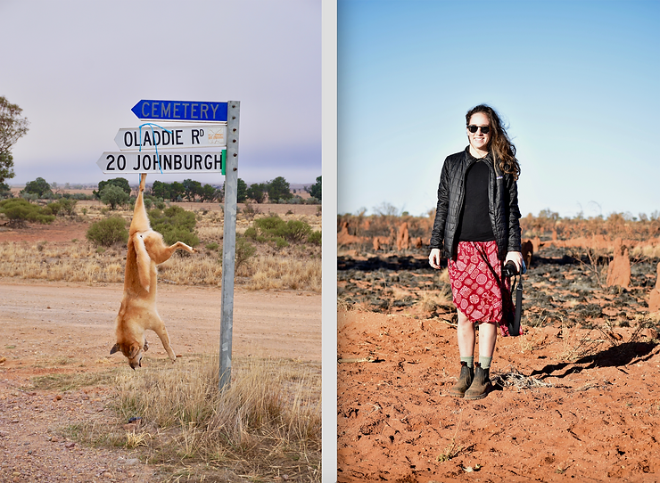

4x4 Across Australia
TWhere is your husband? Are you in the outback alone? These two questions followed me as I crossed Australia on unsealed 4x4 tracks in my Landcruiser. The answers were, there is no husband, and yes I am in the outback alone. People stared in disbelief as if I had a few kangaroos loose in the top paddock. I reckon they didn’t know whether to call the authorities or invite me for a beer. Let’s backtrack to why I was alone in the outback. It was early 2018 and I was half-way through my two-year Fulbright Fellowship in Australia. I had not seen as much of the country as I wanted to, so, on a bit of a whim, I bought a 2002 Turbo-Diesel Toyota LandCruiser (fully kitted out with a snorkel, bull-bar, lift kit, 40L fridge, and recovery kit).

Keep in mind, at the time of the purchase, I had no four-wheel (4x4) driving experience. I had spent the previous 6 years in NYC and Sydney, during which time my general driving skills had atrophied and I had never even driven a 4x4 off-road. Don’t get me wrong, I had been in plenty of them - but in field, for work, I always had a driver. Come 2018, I decided it was high time to learn. Never one to ease gently into things, I bought a LandCruiser on the internet and then flew down to Canberra, Australia to pick it up. I handed over the cash and immediately realized I may have bitten off more than I could chew. Determined (and unable to return the vehicle), I began the drive back to Sydney. I gave myself two months to sort out the refit and learn how to four-wheel drive - audacious I know. For my first adventure, I took a dashing British man on a sand dune safari. Realizing I could not exclusively rely on friends for the amount of knowledge I was going to need to pull off a 4x4 crossing of Australia, I turned to the pros.
Often these kinds of speciality stores frighten me. I tell people my plans and they make me feel like an idiot for my lack of knowledge on the subject. They take on a tired tone, exhausted from explaining to wanna-be 4x4 drivers how diff locks and snatch straps work. At this point, I learned a valuable lesson: it’s okay not to know everything. Don’t pretend. Ask all the questions. So I hired the Mitchell Brothers. One of the hearty Australian brothers installed my forward recovery points and the other took me out for private 4x4 lesson in the bush- money and time well spent. The Mitchell Brother impressed upon me that when you are driving in soft sand or mud, expect to get stuck, expect the rocks to crack in the windshield, expect tyres to get punctured, and belts to snap. Just except it. That way it won’t frustrate you when it happens, because it will happen. And it did all happen. While I learned a lot, I realized that the only way I was really going to become a confident 4x4 driver was through extensive practice, which given my time constraints, meant that the majority of my learning was going to happen on the crossing, alone; not under the safe watchful eye of a jolly Australian 4x4 expert.
It was my last night in Sydney for an undetermined amount of time. I thought of all the comforts I was leaving behind. My comfortable bed with bamboo cotton sheets, single-origin coffee, craft beer, warm showers, morning paddleboarding sessions with friends, and internet access to Skype my family. I was nervous and questioning why I was embarking on this crossing; is this some kind of pride thing? To prove something? What if I can’t even make it 25% of the way to Alice Springs? Who am I kidding, I don’t know anything about cars! What if something breaks, all satellite coverage fails, and I perish in the desert? What could go wrong that I haven’t even thought of? My mind was racing.
The breaking sun heralded departure day. I took forever to get ready, but the truck (lovingly name Lord Laszlo the LandCruiser) was charged with energy and over packed. For the first half of the journey I brought friends, fellow audacious young women that would be there for moral support as I learned how to use my 4x4. I figured the first leg of the journey would give me the chance to learn what I really needed to know. How to 4x4, how to get myself unstuck, how to find a place to camp, build confidence in my diesel, water and food calculations, and to be competent in it all before I was on my own.
My travel companion for leg 1 (Sydney to Alice Springs) was an Australian mate, Marisa, who had previously worked as a jillaroo (farm hand on remote cattle stations), and this kind of adventure was nothing out of the ordinary for her. As we drove Northwest, every day got more remote, and every morning I would break out the maps and calculate our distance, speed, water and fuel supplies. I would prepare all the solar gear to top up charges, and would check the vehicle. The calculation and checks made me feel like I was in control. My mind was heavy with a billion unknowns. When will my tyre pop? Where will I sleep tonight? And the next night? Have I brought enough water? And Diesel? I kept unpacking and repacking, worrying about water. In the last proper town I questioned “should I run into Bunnings and buy another jerrycan? What if I don't have enough?” Marisa would reassure me, “Sophie you have 80 liter capacity on the roof and 80 liters in the cabin. We'll be fine.” She was so confident we would be okay. I appreciated and hated it simultaneously.
After about 3 days, the environment started to change. The Australia I was familiar with was urban sprawl, coastal beach towns, kangaroos, and shopping centers. But out here, life was different. We spent weeks bumping and bone rattling our way through dusty towns on correlated tracks, with dead kangaroos everywhere. Water and opportunity were scarce, dust and red dirt permeated all things. The days were hot and the nights cold. Dingo’s were shot and hung from street signs. Beer was appropriate at all hours of the day. Everyone was rugged; it was tough to make it out here.
But me, I looked like a 15 year old Pippi-longstocking. I didn’t look like some rugged adventurer or farmer. I looked like a kid from the city that ran off with her dad’s 4x4. I am tiny: 5’3,” 110lbs, with a soft voice and likely found wearing a sundress - yes even in the outback. Was I a four wheel driver, an adventurer, or just a fragile tourist? To those that don’t know me, I reckon I give off the appearance of someone who would squeal at the sight of a bug.
Leg 1 was easy - but the learning opportunities were immense. I figured out how to drive (and accidentally skid) in intense mud. I began to get confident remotely bush camping on someone’s land (yes, I know some call it trespassing). I learned to cook elaborate meals over the fire and realized that every morning is instantly made better by fire-smoked bacon, warm coffee, and homemade bread. After accidentally getting high on diesel fumes, I figured out how to refuel my diesel tanks from jerry cans, without losing brain cells and seeing stars. I grew accustomed to flies. Not just a few trying to land on your dinner, I mean hundreds of thousands everywhere. So desperate are outback flies, that they will go at your eyeball for water. Each day I was getting more confident. Yet I still couldn't believe how many dead kangaroos I'd seen. Every experience was new and exciting, preparing me for what was to come. When we got to Alice Springs, I left the car with a friend for a week while I returned to Sydney for work/school.
I spent a full week back in Sydney, and it felt good. Being home, sleeping in my bed, going to my favorite local haunts with friends, binging Netflix; life in my land cruiser felt like a different lifetime. All week, my mind flirted dangerously with these creature comforts, but I knew I had to return, and I boarded a flight back to Alice Springs. The plan for Leg 2 was to transit Alice Springs to Broome. Accompanying me on this leg was a childhood friend from Florida, Sandy. We traveled together in Australia back in 2008, and this was equivalent to our 10 year anniversary.
Sandy and I were good friends, our parents raised us together, but we had never ventured together in this capacity. I believe you get know someone best by traveling with them. When someone is outside of their comfort zone, particularly when they face hunger, exhaustion, and money, you see the sides to them that are generally masked by the social niceties of everyday life. My travelling companions were slammed with all of those challenges and me, who is not always as patient and loving as I should be. It wasn’t always easy for any of us, but our bonds are now the stronger for it.